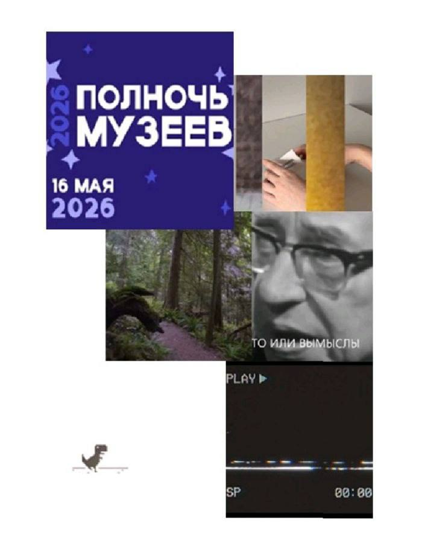
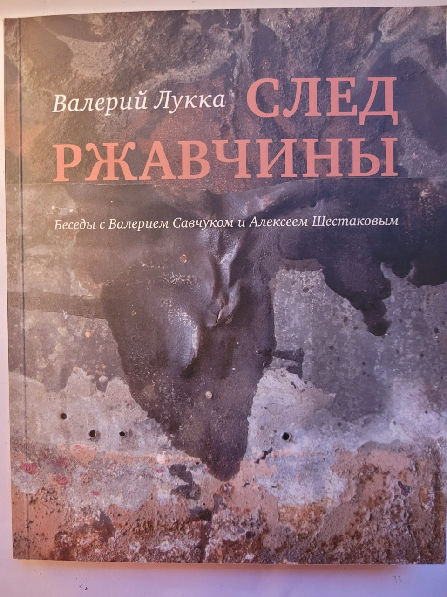
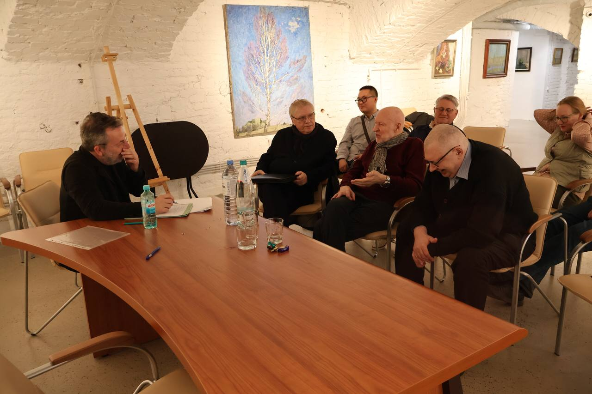
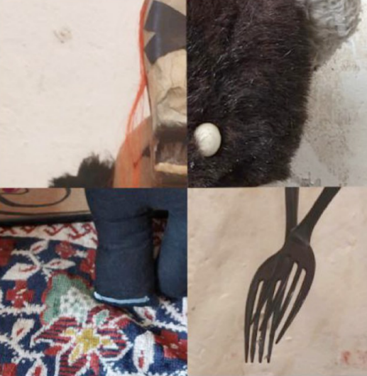
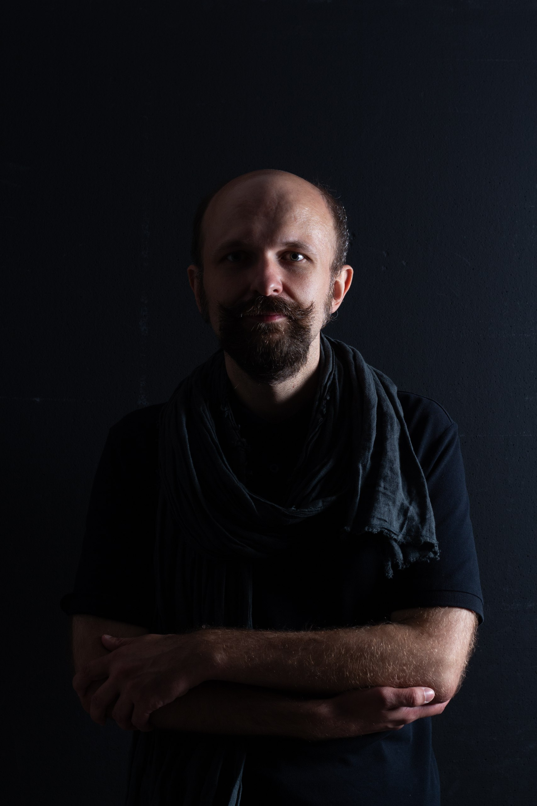

📌 Анонс

Видео-арт-фест Музея философии
Ночь музеев в Golyj Wood: Билл Виола, видео-арт выпускников СПбГУ, лекция «Билл Виола как видеохудожник». Начало в 19:30.
Первая философская институция музейного типа
Музей философии — это пространство, где мысль обретает форму, а вопросы оказываются важнее ответов. Мы стремимся сделать философию доступной и живой, показать её как часть культуры и повседневности.
Узнать больше
Ночь музеев в Golyj Wood: Билл Виола, видео-арт выпускников СПбГУ, лекция «Билл Виола как видеохудожник». Начало в 19:30.

У Музея философии вышла первая книга издательской программы — беседы с Валерием Савчуком и Алексеем Шестаковым. Совместное издание с «Бартлби и компания».

Встреча состоялась 18 апреля в Выставочном центре «Петербургский Художник» и стала ведущим событием философско-просветительской программы Музея философии.

Что мы ощущаем, когда всматриваемся в объект, созданный человеком? В рамках онлайн-экспозиции «Рождение рукотворной экзистенции» мы постараемся взглянуть на объект, чьим демиургом является человек, через призму трансцендентного, наделив его душой.

С Константином Азаровым — философом и преподавателем СПбГУ, исследователем философии музея и современного искусства. Стартуем 1 марта: начинаем весну с риддингов — успей записаться!
Фото: Ника Шахназарова
Создание новой культурной институции, где философия становится доступной, понятной и живой частью общественной жизни.
Создаём площадку для общения философов, студентов, школьников и широкой аудитории.
Лекции, дискуссии, квесты и мультимедийные проекты позволяют проживать философские идеи.
Соединяем русскую философскую традицию с современными гуманитарными технологиями.
Увековечиваем имена мыслителей через таблички, маршруты и мультимедийные проекты.